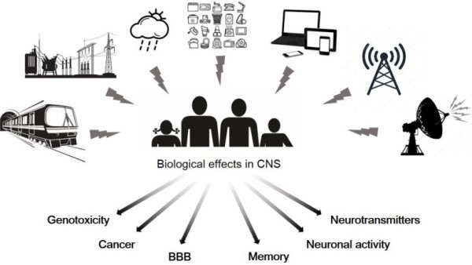
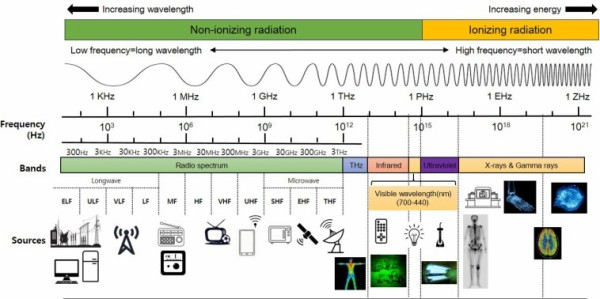
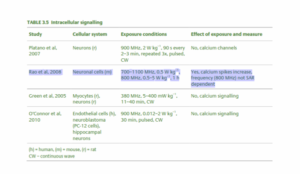
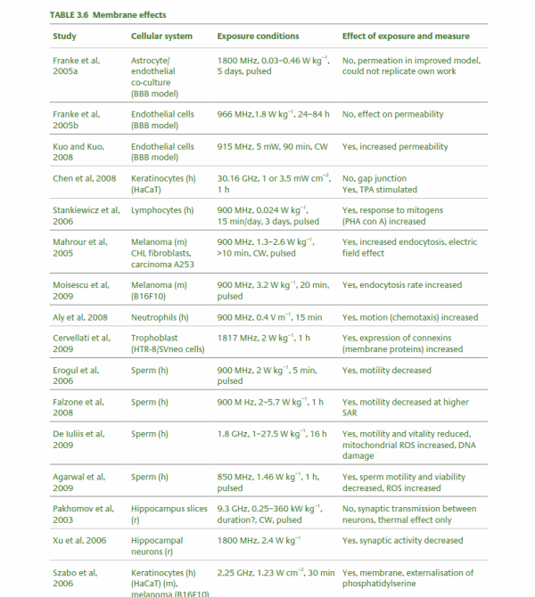
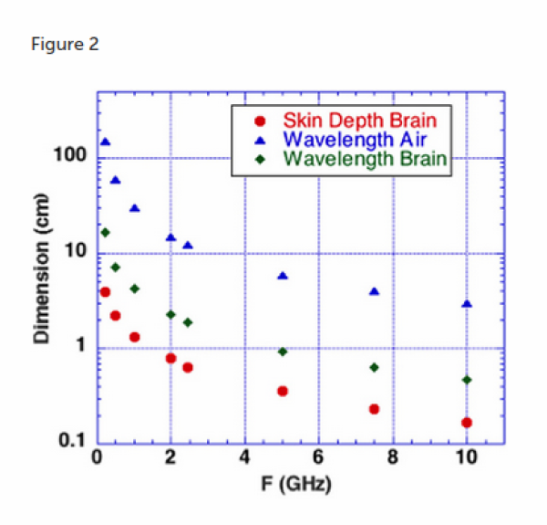
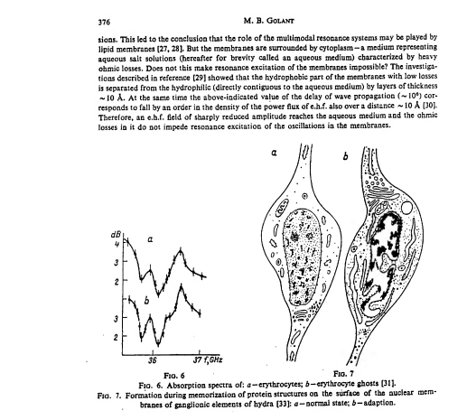
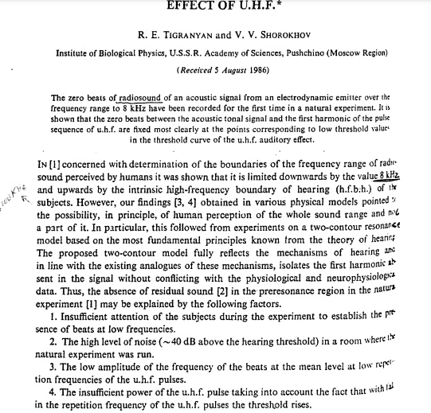
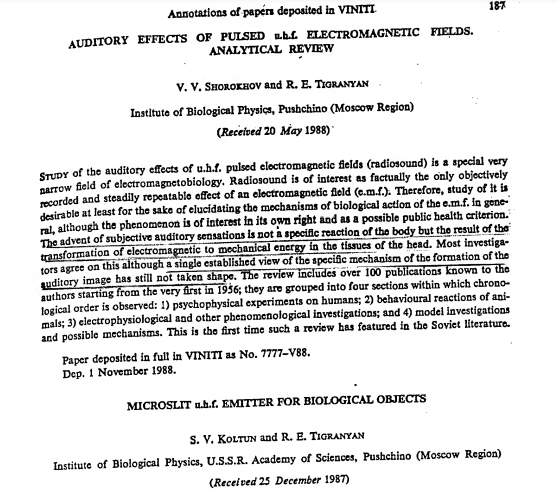

In short - all what I found and see in Ukraine for last years is a slowly murder, CIDT, destroy memory and all pattern recognition and processing system ( failure of all organism functions ), if someone from police, mafia, security service or army start radiate you every day - EMF physically damage brain, neural system and voice manipulations in fields break your mind and by this criminal refuse you attempts to get help from rights and law protection agencies.
Why:
Images, from nlm, with schematic visualization of the possible biological effects:
BBB - blood-brain barrier.
Part of GSM mobile broadband part of spectrum and lower can be used for creating process of the neurodegeneration for "non needed" people.
And suppress neuronal activity or damage organism functions.
Tables from RCE-20_Health_Effects_RF_Electromagnetic_fields
The influence of microwave radiation on the morphology of the brain
The central nervous system, especially the hippocampus, is highly sensitive to microwave radiation [43, 44]. Previous studies have shown that in unexposed control rats, hippocampal neurons are aligned in neat rows in which the edges are clear, nuclei are clear, nucleoli can be observed, and pyramidal cells do not exhibit obvious necrosis. However, in rats treated with long-term exposure to radiation, neurons exhibit edema and are arranged irregularly. Nuclear pyknosis and capillary congestion are also observed.
Regarding the ultra-structure of the hippocampus, symptoms including neuronal atrophy, mitochondrial swelling, crest reduction and a disordered arrangement were observed, the rough endoplasmic reticulum exhibited cystic expansion, the number of synaptic vesicles decreased, and the synaptic cleft was widened (2.45 GHz pulsed microwave field at an average power density of 1 mW/cm2 for 3 h/d for up to 30 days [45] and an average power density of 2.5, 5, or 10 mW/cm2 for 6 min/d for up to 1 month resulted in an average calculated SAR of 1.05, 2.1, and 4.2 W/kg, respectively [46]). The hippocampus plays roles in learning and memory, and the results of these studies suggest that the deficits in learning and memory functions observed after exposure to microwave irradiation might be due to abnormalities induced in hippocampal structures.
Epidemiology from Military Medical Research
Industrial exposure
In long-term epidemiological investigations of large population with occupational exposure, the results have not been consistent. Dasdag et al. [16] investigated workers who worked at a television transmitter station with a frequency ranging between 202 and 209 MHz, 694–701 MHz, 750–757 MHz, or 774–781 MHz and at a medium-wave broadcasting station. Their answers to questionnaires showed that the workers suffered from symptoms including headaches, fatigue, stress and sleeplessness. Most of the workers recovered when they left the source of microwave radiation. In addition, another study showed that significant psychiatric symptoms were observed in people who worked in these areas. In particular, somatization, obsessive compulsivity, paranoid ideation and psychoticism were reported [17].
Military exposure
Standard devices used by military personnel that may pose electromagnetic hazards include radars and missile systems. In a report by the Poland Department of Microwave Safety, occupational exposure to electromagnetic fields was analyzed in the work environment of personnel of 204 devices divided into 5 groups (surface-to-air missile system radars, aircraft and helicopters, communication devices, surveillance and height finder radars, airport radars and radio navigation systems). In 57% of military devices, Polish soldiers work in occupational protection zones. In 35% of cases, soldiers work in intermediate and hazardous zones and in 22%—only in the intermediate zone. In 43% of devices, military personnel are not exposed to an electromagnetic field.
The visual reaction time and short-term memory of healthy male and female workers at a radar site with a frequency range of 2–18 GHz was recorded with a simple blind computer-assisted-visual reaction time test or modified Wechsler Memory Scale test. The results indicated that radar microwave radiation leads to a decreased reaction time and lower short-term memory performance [18]. Among radar workers exposed to 14–18 GHz microwaves, the somatic symposium anxiety and insomnia, social dysfunction and severe depression were caused [19]. Singh et al. [20] divided the radar workers into three sets: control group (n = 68), exposure group I (n = 40, exposed to 8–12 GHz) and exposure group II (n = 58, working with radar at 12.5–18.0 GHz). The three groups were further divided into two groups according to their years of service (up to 10 years and >10 years) to investigate the effect of years of exposure to radar. Melatonin and serotonin levels were estimated, which play important roles in the nervous system. The results demonstrated the ability of electric magnetic field (EMF) to influence plasma melatonin and serotonin concentrations in radar workers. The results were significant for the range from 12.5–18.0 GHz with a service period greater than 10 years. Additionally, people exposed to military microwave sources were more vulnerable to brain tumors. Richter et al. [21, 22] found a higher incidence of brain cancer in radar technicians and a shortened incubation period (i.e., less than 10 years). Szmigielski [23] collected retrospective data for Polish soldiers over 15 years and showed that the prevalence of brain cancer was higher in each age group.
Effects of microwave radiation on children
Because a child’s nervous system is growing and their head is more vulnerable to radiation energy, studies that have specifically addressed whether the nervous systems of children are more susceptible to electromagnetic radiation have been performed. However, there is little scientific evidence to demonstrate that children are more sensitive to electromagnetic radiation than adults [24, 25].
Human control
From book Military Neuroscience and the Coming Age of Neurowarfare, 2016 Armin Krishnan:
The CIA conducted human experiments on Vietnamese patients and prisoners at the Bien Hoa Hospital in Saigon in 1966–68. In 1966, the CIA sent psychiatrist Lloyd Cotter to Vietnam to field test some of the methods developed by Cameron (McCoy, 2006: 65). So he subjected patients there to extensive electroconvulsive therapy (ECT), where electrodes are attached to a patient’s head that give stimuli of 70 to 150 V at 500 to 900 milliamperes in an effort of ‘pacifying’ the patients (Schrag, 1978: 151). Gordon Thomas alleges that experiments on prisoners went even further than involuntary ECT and included the implantation of electrodes into their brains:
Each man was anesthetized and the neurosurgeon, after he had hinged back a flap in their skulls, implanted tiny electrodes in each brain. When the prisoners regained consciousness, the behaviorists set to work. The prisoners were placed in a room and given knives. Pressing the control buttons on their handsets, the behaviorists tried to arouse their subjects to violence.(G. Thomas, 1989: 264–265)
The purpose of these experiments was obviously to develop a technology that could be useful in CIA operations and to provide solutions to some of the questions raised in relation to Project Artichoke. The CIA and DARPA were clearly interested in the development of human brain implants in the context of MK ULTRA/ MK SEARCH research. An apparent goal was the development of a remote control for humans that enabled external control over their thoughts and actions. In 1967, a former FBI agent wrote under the pseudonym Lincoln Lawrence the book 'Were We Controlled?' about the Kennedy assassination. With the help of a brain implant it would be possible to remotely change the emotions of a subject and even induce partial amnesia.
The technique was called ‘radio-hypnotic intercerebral control’ and ‘electronic dissolution of memory’ (RHIC-EDOM). Lincoln described it in the following way:
Under RHIC, a ‘sleeper’ can be used years later with no realization that the ‘sleeper’ is even being controlled!He can be made to perform acts that he will have no memory of ever having carried out. In a manipulated kind of kamikaze operation where the life of the ‘sleeper’ is dispensable, RHIC processing makes him particularly valuable because if he is detected and caught before he performs the act specified … nothing he says will implicate the group or government which processed and controlled him…By electronically jamming the brain, acetylcholine creates static which blocks out sights and sounds. You would then have no memory of what you saw or heard; your mind would be a blank. (quoted from G. Thomas, 1989: 261–264)
Further confirmation about this research project came from the Tennessee journalist James L. Moore, who claimed that he had come into the possession of a 350 page CIA manual from 1963 that explained RHIC-EDOM (Bowart, 1978: 262–264).
The only official mention of RHIC-EDOM is the questioning of Sidney Gottlieb by Senator Richard Schweiker during a 1977 Congressional hearing, where he partially admitted to its existence. Gottlieb testified: ‘As I remember it, there was a current interest, running interest, all the time in what effects people’s standing in the field of radio energy have, and it could easily have been that somewhere in many projects, someone was trying to see if you could hypnotize someone easier if he was standing in a radio beam. That would seem like a reasonable piece of research to do’ (US Congress, 1977b). In the light of the published experiments with brain implants by Heath and Delgado, the RHIC-EDOM story seems at least plausible.
Or:
For example, MK ULTRA subproject 62, managed by Maitland Baldwin, researched the effects of electromagnetic waves on monkeys. In one published experiment he exposed monkeys to microwaves of a frequency of 388 MHz and the power of 100 V. He noted several effects such as changes in the EEG of the exposed monkeys, as well as arousal and drowsiness. Interestingly, he even observed lethal effects as a result of microwave exposure: ‘It was possible to kill monkeys within a few minutes’ exposure…when the head was elevated and the chin was fixed’ (Baldwin, 1960: 185).
Or:
TMS works with a magnetic coil with several thousands of volts being placed outside of the head to electromagnetically activate or stimulate a particular region of the brain. The stimulation by the magnetic field only lasts 100 to 200 microseconds and could be applied in pulse, paired pulse, or repetitive pulse treatments (R.H. Blank, 2013: 30). The effect is similar to the electrical stimulation of the brain (ECT or DBS), but has the advantage of being neither painful, nor invasive.... As pointed out by Canli et al., there are many potential applications of TMS: ‘Depending on the TMS stimulation parameters, activation in the cortex can be increased or reduced. In practice, TMS can influence (either improve or diminish, depending on the parameters and target region) many brain functions, including directing physical movement, visual perception, memory, reaction time, speech and mood’ (Canli et al., 2007: 4). Neuroscientists are already using TMS in conjunction of BCIs and brain-to-brain interfaces. For example, TMS can be used to stimulate the motor cortex and thereby enable external control over the movements of test subjects or it could stimulate the auditory cortex for transmitting messages, which will be discussed further below. However, TMS has a low spatial resolution, which means that it is not very precise (Tufail et al., 2010).
We consider microwave frequency ranges and wavelengths from 300 MHz (1 m) to 10 GHz (3 cm) in air where availability of microwave sources coherent on short time scales (i.e., 50 μs) exist. The permittivity and conductivity of white and gray brain matter are shown in Figure 1 (20). Figure 2 shows the depth into brain tissue where the microwave energy is ~1/2.7 of incident energy. Note that microwave wavelengths in air and brain tissue are functions of microwave frequency. The microwave wavelengths in brain tissue range from 0.5 to 18 cm with 1/2.7 attenuation depths of 0.2–4 cm.
Figure shows that 0.3–10 GHz microwave radiation penetrates a few cm to a few mm into brain tissue:
From Military Neuroscience and the Coming Age of Neurowarfare 2016, Armin Krishnan.
Many studies on microwaves from the 1960s and 1970s have already indicated many of the potential issues: long-term exposure to microwaves can cause genetic mutation, brain tumours and other cancers, behavioural abnormalities (suicide), alterations in biological cycles, weakening of the immune system and alterations in learning ability (Becker, 1990: 214–215; also Brodeur, 1977). A 1970 RAND metastudy on neurological effects of microwaves suggested: ‘it seems likely that neural function, and therefore behavior, are indeed disturbed by low intensity microwaves…the studies consistently and repeatedly report that human beings do exhibit behavioral disturbances when exposed to low intensity microwaves’ (MacGregor, 1970: 8).
These conclusions are not too different from some more recent studies that also indicate brain and behavior changes resulting from long-term EMF exposure. For example, a study from 2000 claims: ‘Natural and man-made electromagnetic fields influence the mood and behavior of healthy and sick people. Considerable evidence suggests that electromagnetic fields affect sleep’ (Sher, 2000). Another study from 2006 has linked ambient electromagnetic fields to human moods and behaviour, finding a significantly increased suicide rate during periods of geomagnetic storm (Berk et al., 2006). Continuous electromagnetic field exposure has been linked in scientific studies to ‘cancer, heart disease, sleep disturbance, depression, suicide, anger, rage, violence, homicide, neurological disease and mortality’ (Cherry, 2002). A leaked study on the British police radio system TETRA prepared for the Police Federation of England and Wales contends that microwaves pulsed in certain frequencies can induce paranoia, depression, suicide, manic behaviour and blindness (Trower, 2001: 30).
From 1991 Ukraine has all this in service too, CIDT: Effects of Electromagnetic Radiation on Biological Systems: Current Status in the Former Soviet Union (1993): Internet Archive.
  2020-2024, Ukraine, Kharkiv, Mirgorod, Goggle photos video record of incoming signal from millitary ( DEW ) generators for power lines: https://photos.app.goo.gl/TpBwVAqG9EpT81ME9
Resources
Effects of Electromagnetic Radiation on Biological Systems: Current Status in the Former Soviet Union (1993) : Free Download, Borrow, and Streaming : Internet Archive https://web.archive.org/web/20211108134629/https://ia601205.us.archive.org/18/items/CIA-RDP96-00792R000100070001-9/CIA-RDP96-00792R000100070001-9_text.pdf
https://mmrjournal.biomedcentral.com/articles/10.1186/s40779-017-0139-0
https://www.ncbi.nlm.nih.gov/pmc/articles/PMC6513191/
https://onlinelibrary.wiley.com/doi/10.1002/bem.22338
https://www.ncbi.nlm.nih.gov/pmc/articles/PMC6015645/
https://onlinelibrary.wiley.com/doi/epdf/10.1002/bem.22310
https://www.nationalgeographic.com/science/article/electromagnetic-noise-disrupts-bird-compass